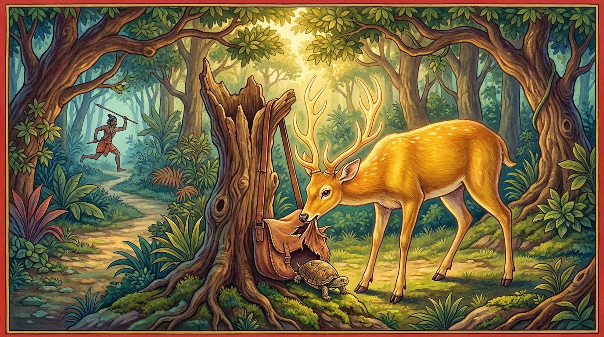

6. කුරුංග මෘග ජාතකය (206)
“ඉංඝ වද්ධමයං පාසං” යන මේ ගාථාව මුල් කරගෙන බුදුරජාණන් වහන්සේ වේළුවනාරාමයෙහි වැඩවාසය කරන සමයෙහි දේවදත්ත තෙරුන් අරබයා මෙය වදාළ සේක. එකල්හි බුදුරජාණන් වහන්සේ, “දේවදත්ත තෙම මා මැරීමට උත්සාහ කරයි” යන්න අසා, “මහණෙනි, දේවදත්ත මා මැරීමට උත්සාහ කළේ දැන් පමණක් නොවේ, පෙරත් උත්සාහ කළේමය” යයි වදාරා අතීත කතාව ගෙනහැර දැක්වූ සේක.
අතීතයේ බරණැස් නුවර බ්රහ්මදත්ත රජු රාජ්ය කරන කල්හි බෝධිසත්වයන් වහන්සේ කුරුංග නම් මුවෙකුව ඉපිද වනයෙහි එක් විලකට නුදුරු ලැහැබක වාසය කළ සේක. එම විල අසලම ගසක මුදුනේ කෑරලෙක් ද, විලෙහි ඉබ්බෙක් ද වාසය කළහ. මෙසේ මොවුහු තිදෙනාම ඔවුනොවුන් කෙරෙහි ප්රියමනාපව මිතුරන් ලෙස වාසය කළාහුය. ඉක්බිති එක් මුව වැද්දෙක් වනයෙහි ඇවිදින අතරතුර පැන් තොටෙහි (සතුන් දිය බීමට එන තැන) බෝධිසත්වයන්ගේ පා සටහන් දැක, ලෝහ දම්වැලක් වැනි ශක්තිමත් වූ හම් පටින් තැනූ මලපතක් (පාශයක්) අටවා ගියේය. බෝධිසත්වයන් වහන්සේ දිය බීමට පැමිණි මුල් යාමයේදීම මලපතට හසුවී හඬා වැටුණාහ. මුවාගේ හඬ අසා ගස මුදුනේ සිටි කෑරලා ද, දියෙන් ඉබ්බා ද පැමිණ “දැන් කුමක් කරමුදැයි” සාකච්ඡා කළහ. ඉක්බිති කෑරලා ඉබ්බා අමතා, “මිතුර, නුඹට දත් ඇත. නුඹ මේ මලපත කපන්න. මම ගොස් වැද්දා නොඑන ලෙස බාධා කරන්නෙමි. මෙසේ අප දෙදෙනාගේම උත්සාහයෙන් අපගේ මිතුරාට ජීවිතය ලැබෙන්නේය” යයි පවසා මේ කාරණය විස්තර කරමින් පළමු ගාථාව කීවේය:
“එබැවින් ඉදිබු මිතුර, හම් පටින් ඇඹරූ මේ පාශය නුඹේ දත්වලින් හපා කපව. වැද්දා නොපැමිණෙන ලෙස (ඔහුව ප්රමාද කිරීමට) මම ක්රියා කරන්නෙමි.”
ඉන්පසු ඉබ්බා හම් පටිය හපා කෑමට (සිඳ දැමීමට) පටන් ගත්තේය. කෑරලා ද වැද්දා වාසය කරන ගමට ගොස් ඔහු එන මගට නුදුරු ගසක සැඟවී සිටියේය. වැදි පුත්රයා අලුයම් කාලයේම හෙල්ලය රැගෙන නිවසින් පිටත් විය. කුරුල්ලා ඔහු නික්මෙන වේලාව දැන, හඬා පියාපත් ගසා, ඉදිරිපස දොරටුවෙන් එළියට බැස්ස ඔහුගේ මුහුණෙහි හැප්පුනේය. වැද්දා “කාලකණ්ණි පක්ෂියෙකු මගේ ඇඟේ හැප්පුනේය” යයි සිතා නැවත ගෙට වැදී ටික වේලාවක් නිදාගෙන, නැවතත් හෙල්ලය රැගෙන නැගිට්ටේය. කුරුල්ලා “මොහු පළමුව ඉදිරිපස දොරෙන් නික්මුණු නිසා දැන් පසුපස දොරෙන් එනු ඇත” යයි සිතා ගොස් ගෙයි පසුපස පැත්තේ රැඳී සිටියේය. වැද්දා ද “ඉදිරිපස දොරෙන් යද්දී කාලකණ්ණි කුරුල්ලා දිටිමි. දැන් පසුපස දොරෙන් යන්නෙමි” යයි සිතා පසුපස දොරටුවෙන් නික්මුනේය. කුරුල්ලා නැවතත් හඬාගෙන ගොස් ඔහුගේ මුහුණෙහි හැප්පුනේය. වැද්දා “නැවතත් කාලකණ්ණි කුරුල්ලා මට ගැසුවේය. මොහු මට යන්නට ඉඩ නොදෙයි” යයි සිතා ආපසු හැරී ගොස් අරුණ නැගෙන තෙක් නිදාගෙන, අරුණ නැගුණු පසු හෙල්ලය රැගෙන නික්මුනේය. කෑරලා වේගයෙන් පියාඹා ගොස් “වැද්දා එන්නේ ය”යි බෝධිසත්වයන්ට දැන්වීය.
ඒ වන විට ඉබ්බා විසින් එක් පටියක් හැර අන් සියලු වරපට හපා කපා තිබුණි. ඉබ්බාගේ දත් වැටෙන තරමට ලිහිල් වී කටින් ලේ ගලන්නට විය. වැදි පුත්රයා හෙල්ලය රැගෙන අකුණු සැරයක් මෙන් වේගයෙන් එනු දුටු බෝධිසත්වයන් වහන්සේ, ඉතිරි පටියත් කඩාගෙන වනයට වැදුණාහ. කෑරලා ගස මුදුනට ගියේය. නමුත් ඉබ්බා මහන්සි වැඩිකමට එතැනම වැතිර සිටියේය. වැද්දා ඉබ්බා අල්ලා මල්ලක දමා එක් කණුවක එල්ලුවේය. බෝධිසත්වයන් වහන්සේ නැවතී බලන කල ඉබ්බා අල්ලා ගත් බව දැන, “මිතුරාට ජීවිත දානය දෙන්නෙමි” යයි සිතා, දුබල මුවෙකු මෙන් අඟවා වැද්දාට පෙනී සිටියහ. වැද්දා “මොහු දුබලයෙකි, මරාගන්නෙමි” යයි සිතා හෙල්ලය ගෙන ලුහුබැන්දේය. බෝධිසත්වයන් වහන්සේ වැද්දාට අල්ලා ගත නොහැකි වන සේත්, නොපෙනී නොයන සේත් පරතරය තබා ගනිමින් වැද්දා කැටුව කැලයට වැදුණාහ. බොහෝ දුරක් ගිය බව දැන, පා සටහන් සඟවා වෙනත් කෙටි මගකින් සුළඟක් මෙන් වේගයෙන් අවුත් අඟින් මල්ල ඔසවා බිම දමා, ඉරා ඉබ්බා එළියට ගත්හ. කෑරලා ද ගසින් බැස්සේය. බෝධිසත්වයන් වහන්සේ ඒ දෙදෙනාටම අවවාද දෙමින්, “මම නුඹලා නිසා පණ රැකගතිමි. මිතුරන් වශයෙන් නුඹලා මට කළ යුතු දේ කළාහුය. දැන් වැද්දා අවුත් නුඹලා අල්ලා ගනු ඇත. එබැවින් මිතුරු කෑරල, නුඹ නුඹේ දරුවන් ද රැගෙන වෙනත් තැනකට යව. මිතුරු ඉබ්බ, නුඹ ද දියට යව” යයි කීහ. ඔවුහු එසේ කළහ.

බුදුරජාණන් වහන්සේ සම්බුද්ධත්වයට පත්ව (මෙම කතාව විස්තර කරමින්) දෙවන ගාථාව වදාළ සේක.
“ඉබ්බා ජලයට පිවිසියේය; කුරුංග මුවා වනයට පිවිසියේය; කෑරලා ගස මුදුනෙන් තම දරුවන් ඈතට රැගෙන ගියේය.”
වැද්දා ද ඒ ස්ථානයට අවුත් කිසිවෙකු නොදැක, ඉරුණු මල්ල රැගෙන දොම්නසින් යුතුව තම නිවසට ගියේය. ඒ මිතුරන් තිදෙනා දිවි ඇති තෙක් විශ්වාසය පළුදු නොකර වාසය කොට, කම් වූ පරිදි මිය පරලොව ගියහ.
බුදුරජාණන් වහන්සේ මේ ධර්ම දේශනාව ගෙනහැර දක්වා ජාතක කතාව නිම කළ සේක. “එකල වැදි පුත්රයා වූයේ දේවදත්තය. කෑරලා වූයේ සාරිපුත්තයන් වහන්සේ ය. ඉබ්බා වූයේ මොග්ගල්ලානයන් වහන්සේ ය. කුරුංග මුවා නම් ලොව්තුරා බුදු වූ මම ම වෙමි.”
සවැනි කුරුංග මෘග ජාතක වර්ණනාව නිමාවිය.